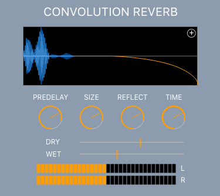

THE HIT FACTORY
Defined Sampling's award winning sample libraries can all be used within Samplicity. Tighter integration between the libraries and Samplicity means you'll get professional results faster than ever whether you're producing on the road, in the home, or in the studio.
PLAY IT AGAIN SAM
Perform and audition instruments from Samplicity's 75GB library with ease. Load instruments directly from the Perform page providing a simple sample player experience before ever needing to dive in to other settings. Plug and play integration with MIDI hardware and DAW software means you'll be tickling the digital ivories almost instantly.
I DID IT STEINWAY
Defined Sampling's latest library, The Grand Concert - Grand Piano Collection, includes the world's finest Grand Pianos sampled at studios from all over the world. Popular choices such as Steinway and Yamaha lead the pack while the collection extends to various deconstructed, damaged and destroyed pianos for more avant garde compositions.
LIBRARY DEMOS
MOR Drum Kit
Steinway Piano
Electric Piano mkII
Jazz Organ
Mood Strings
Subtractive Thought
I SYNTH
THEREFORE I AM
Samplicity includes the synthesis engine from the upcoming Synthetic synthesiser plug-in to provide subtractive and FM synthesis sounds. Sythesiser modules can be used indvidually or layered on top of samples or each other to build unique sounding instruments.
YOU TALKING TO ME?
Sample faster than ever with built-in sampling functionality - no additional software required. Route audio directly from your audio interface into Samplicity and press record whenever inspiration strikes. Direct disc recording means that samples don't need to compete for memory.
PERFORMANCE MANUSCRIPT
The Scripting Module powers more dynamic performances. Create strumming patterns, arpeggiators, triggers, round robins, and more with an easy to learn scripting language. Build on the included templates or create completely from scratch.
THE CUTTING ROOM FLOOR
Edit samples directly within Samplicity with cut, copy, and paste functionality to trim and rearrange while advanced editing functions let you warp and correct. Samples can then be pushed to the Build page to be arranged, layered, and constructed into instruments ready for performance.
PURE MIXOLOGY
Full mixing control allows levels, parameters and effects to be saved and recalled within Samplicity as well as in your DAW. The signal path can be rearranged for pre or post fader constructions and auxiliary channels easily created for maximum control.
SO EASILY AFFECTED
Samplicity's Mix section brings a plethora of included effects modules and presets that can be inserted on each instrument and bus. Choose from a selection of EQs, reverbs, compressors, delays, distortions, and modulators to sculpt your sound into your own image.
EFFECTS DEMOS
Convolution Reverb - MOR Drum Kit
Custom Delay - Steinway Piano
Distortion - Electric Piano mkII
Chorus - Jazz Organ
Pitch Shifter - Mood Strings
Filter - Subtractive Thought